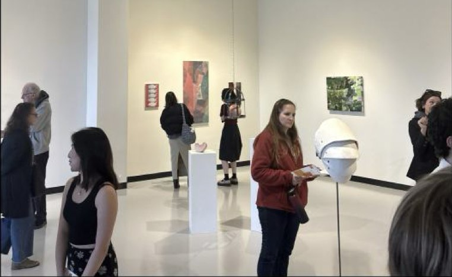
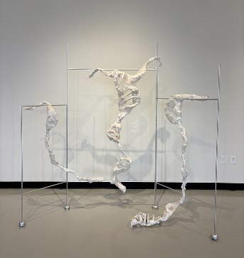
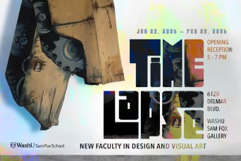

WashU Sam Fox Gallery
Current Exhibition

The Sam Fox School presents “Preheat the Oven”, the 2026 BFA in Studio Art Junior Exhibition from March 27th to April 10.
FEATURED ARTISTSXiomara Colopy • Maya Dabney • Saskia Dentman • Sophia Frist • Levin Garson • Ava Jones • Malia King • Min-Suh Kwak • Sooah Lee • Tai Moore • Scarlet Reo • Nev Turco • Jana Yan • Sophia Yang
About the Gallery
The WashU Sam Fox School Gallery provides students and faculty two formal gallery spaces for presenting exhibitions, and also shows work by widely known contemporary artists. Located less than a mile from campus along the Delmar Loop, the gallery opened in 2025 with 2,950 square feet of exhibition space.
Hours
Wednesday-Saturday, 12-5 p.m. and by appointment.
Contact Us
314-935-7454
Location
6128 Delmar Blvd.
Past Exhibition
Exhibition: Preheat the Oven

Point your camera at an artwork
tap the shutter to scan the next artwork
About the work
plays a read-aloud of the description
Jana Yan
Artist Statement:
As an artist I pay attention to things and spaces around me and the everyday surroundings that shape how we move through the world. I explore the relationship between natural and manufactured environments, and their relationship with memories. While emphasizing materiality, I also focus on conveying the lived experience of being within these spaces. My work reflects my own encounters with the environment, as well as the cultural, social, and historical forces that have shaped and transformed it. With a background in computer science and digital design, I also explore machine and program driven movements and integrate design principles into my studio practice.
Questions or inquiries?
Feel free to contact the artist!
Time Lapse: New Faculty in Design and Visual Art

Time Lapse features work from new and recent faculty additions in Design and Visual Art at the Sam Fox School. The works presented explore time as process, as medium, and in relationship to place and to our past in order to clarify the present moment. At the same time, these recent faculty additions offer a lens into the future of art and design at WashU and in the region.
FEATURED FACULTY ARTISTS
Josh Azzarella • Tiffany Calvert • Joe deVera • Bei Hu • Megan Irwin • Aida Lizalde • Luiz Ludwig • Laurel Schwulst
On View
Jan 23 – Feb 28
Opening Reception
Friday, Jan. 23 from 5-7 p.m.
Gallery Hours
Wed-Sat, 12 - 5 p.m.
Gallery Guide · clickable prototype · read the case study